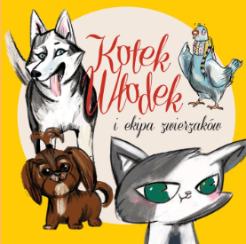
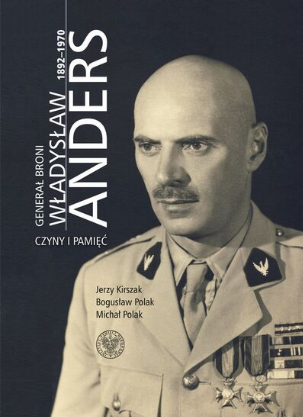

Nasze zbiory
Przerwany pokaz
Ciche kroki na schodach
Opowieść przedwigilijna
Gatunek: Powieść obyczajowa
Szkoła szpiegów w tajnej służbie
Gatunek: Powieść przygodowa

Kotek Włodek i ekipa zwierzaków
Autor: Iwona Gierłach, Joanna Styrylska
Gatunek: Opowiadania i nowele
Więcej czadu. Dzienniczek cwaniaczka
Doktórka od famioków
Gatunek: Powieść biograficzna, Powieść obyczajowa
Rywal diabła
Gatunek: Powieść, Thriller
Zostali na wschodzie: słownik inteligencji polskiej w ZSRS 1945-1991

Generał broni Władysław Anders 1892-1970: czyny i pamięć
Autor: Jerzy Kirszak, Bogusław Polak, Michał Polak
Gatunek: Bezpieczeństwo i wojskowość, Historia